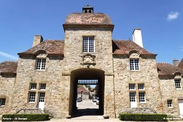
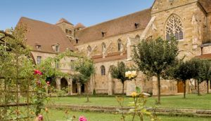
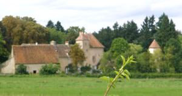
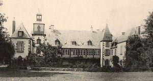
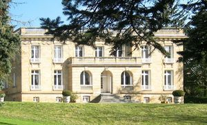
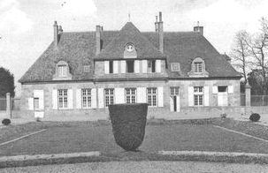
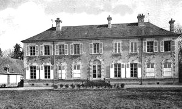
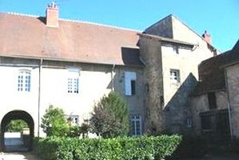
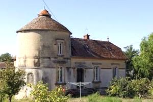

Recensement Jean-Claude Truffet
| Département | 03 — Allier |
| Canton | Souvigny |
| Commune | Souvigny |
| Type d'édifice | Château |
| Période d'origine | XV-XIX |









Sept châteaux à Souvigny , le château des Bourbons du XIVe siècle vestiges(Voir Article ), des Chaulets du XVIIIe siècle, de Chery du XVIe siècle, d'Embourg du XV-XIXe siècles (Voir Article ), de Matray (Voir Article ) de Montaret du XIIIe siècle vestiges (Voir Article ) et de la Vivayre du XVIe siècle. SOUVIGNY, En lan 916, Aimard, premier ancêtre connu des Bourbons, fait don à labbé Bernon de Cluny de sa « villa » de Souvigny et de léglise qui sy trouve, consacrée à Saint-Pierre. Ainsi, une dizaine dannées après la fondation de labbaye de Cluny. Souvigny ne cessera daccroître son influence sur le Bourbonnais. Son église prieurale deviendra un centre de pèlerinage fréquenté au Moyen-Age, et la capitale spirituelle des Bourbons. Pendant plusieurs siècles, le rayonnement de Souvigny et la puissance des Bourbons vont se développer conjointement, permettant létablissement en Bourbonnais de nombreux prieurés et églises romanes. CHAULETS, pas d'information historique. CHERY, dés 1271 un accord entre le prieuré de Souvigny et le seigneur de Bourbon mentionne l'appartenance à Simon de Cherry, en 1300 le fief divisé entre Guillaume et son frère Bartholomé, sa soeur qui échangea sa part moyenant une propriété de même valeur. En 1500 c'est Gilbert de Cherry écuyer qui en est le seigneur et en 1569 passe à Jean de Bigue écuyer. VIVAYRE, le premier connu, en 1593, était Charles de Bigue, inhumé en 1598 en la "grand esglise des Moines". Le 25 décembre 1601, Hilaire de Bigue, dame de La Vivière, épousa Claude des Escures, sieur de Pontcharault. La famille comptait un second fils, illégitime, le "bâtard de La Vivère", Gilbert de Bigue, qui devint prieur de Chantenay. La propriété resta entre les mains de la famille des Escures, qui compta un chevalier de St-Jean de Jérusalem, Louis des Escures de la Vivère, décédé en 1691 à l'âge de 45 ans, et mentionné dès 1676 comme chevalier de Malte dans les registres paroissiaux de Noyant. Esmé des Escures, seigneur de la Vivère, qui lui succéda, mort en 1694, était également signalé comme seigneur de Franchesse dans un acte en 1676. Le dernier membre connu de la famille décéda à l'âge de 84 ans, en 1719, il s'agissait de Jean des Escures de la Vivère. En 1735, Reclesne de Lyonne, chevalier, seigneur de La Vivère, capitaine de cavalerie au Royal-Roussillon.
Souvigny, est un ensemble architectural avec musée et jardin, plus vaste réalisation romane du Bourbonnais, l'ensemble architectural comprend également des jardins à la Française et des granges médiévales qui abritent un musée. Saint-Mayeul, l'abbé de Cluny, fut enterré en 994 dans l'église originelle. La découverte de son tombeau a relancé des fouilles Chaulets, le château a été construit de 1780 à 1789 comprenant un long corps de logis, à rez-de-chaussée et niveau de comble de forme rectangulaire, couvert d'une toiture a pans coupes en pignons et des communs à l'est. Un avant corps central rompt la monotonie de la rigueur classique par sa surélévation à trois fenêtres et il-de-buf et son chaînage de pierres moulurées avec des encadrements de pierre. Les travaux des communs ont été arrêtés par la Révolution puis repris de 1800 à 1807. La cour d'entrée communique au nord avec le parc par un portail ouvert dont les pilastres sont surmontés de motifs sculptés en "pomme de pin". Chery, édifié au XVIe siècle sur des constructions plus anciennes, modifié aux XVIIe et XVIIIe. A l'est, la partie la plus ancienne (fin XVe siècle) a l'aspect d'un petit manoir, une tourelle d'escalier à vis en desservant les parties. Aujourd'hui musée du prieuré, lhistoire des moines Clusiens et des Bourbons.
Les ducs de Bourbons"
Château de Chaulets d'Embourg, des Vieux murs, de Vivayre et de Chery à Souvigny